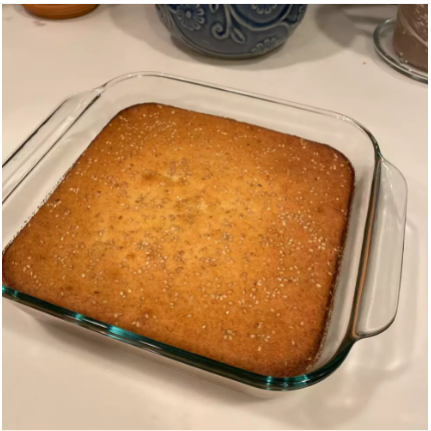

Quesadilla Salvadorena

Description
A quesadilla is a Mexican dish consisting of a tortilla that is filled primarily with cheese, and sometimes meats, spices, and other fillings, and then cooked on a griddle or stove
Nutrition value 270 calories; protein 6.2g; carbohydrates 28.5g; fat 14.9g; cholesterol 80.5mg; sodium 247.7mg
Ingredients
- 3 eggs, separated
- 1 cup white sugar
- ½ cup butter, melted
- 1 (4 ounce) package Parmesan cheese, finely grated
- ¾ cup sour cream
- 1 teaspoon baking powder
- 1 cup rice flour
- 1 tablespoon sesame seeds, or to taste
Steps
- oven to 350 degrees F (175 degrees C)
- Beat egg whites in a glass, metal, or ceramic bowl until firm, but not stiff.
- Combine sugar and butter in a large bowl; beat with an electric mixer on high speed until creamy. Mix in egg yolks until well blended. Mix in Parmesan cheese gradually. Add sour cream and baking powder; beat until batter is smooth.
- Sift rice flour over batter; fold in with a spatula. Fold in egg whites with the spatula.
- Pour batter into a 9x13-inch glass baking dish. Sprinkle sesame seeds on top.
- Bake in the preheated oven until golden brown on top and a toothpick inserted into the center comes out clean, about 38 minutes.